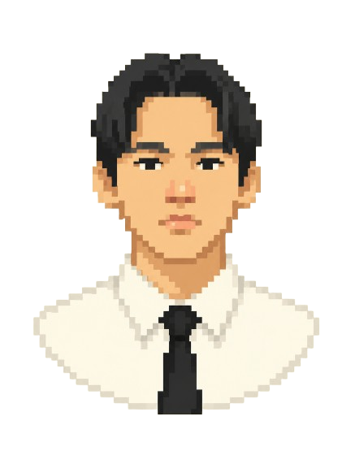
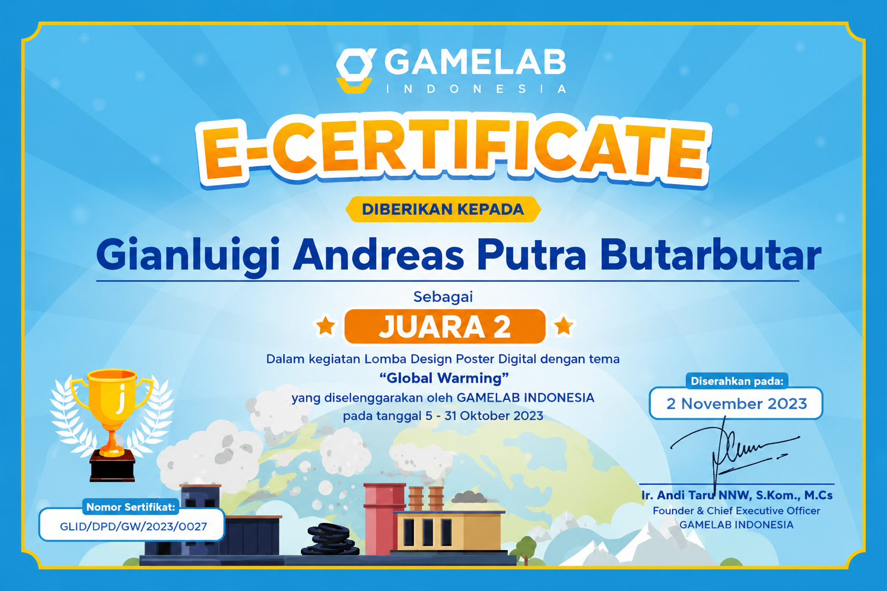
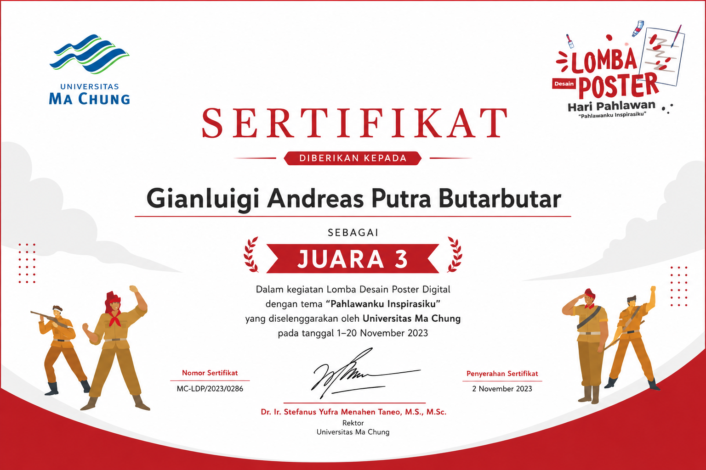
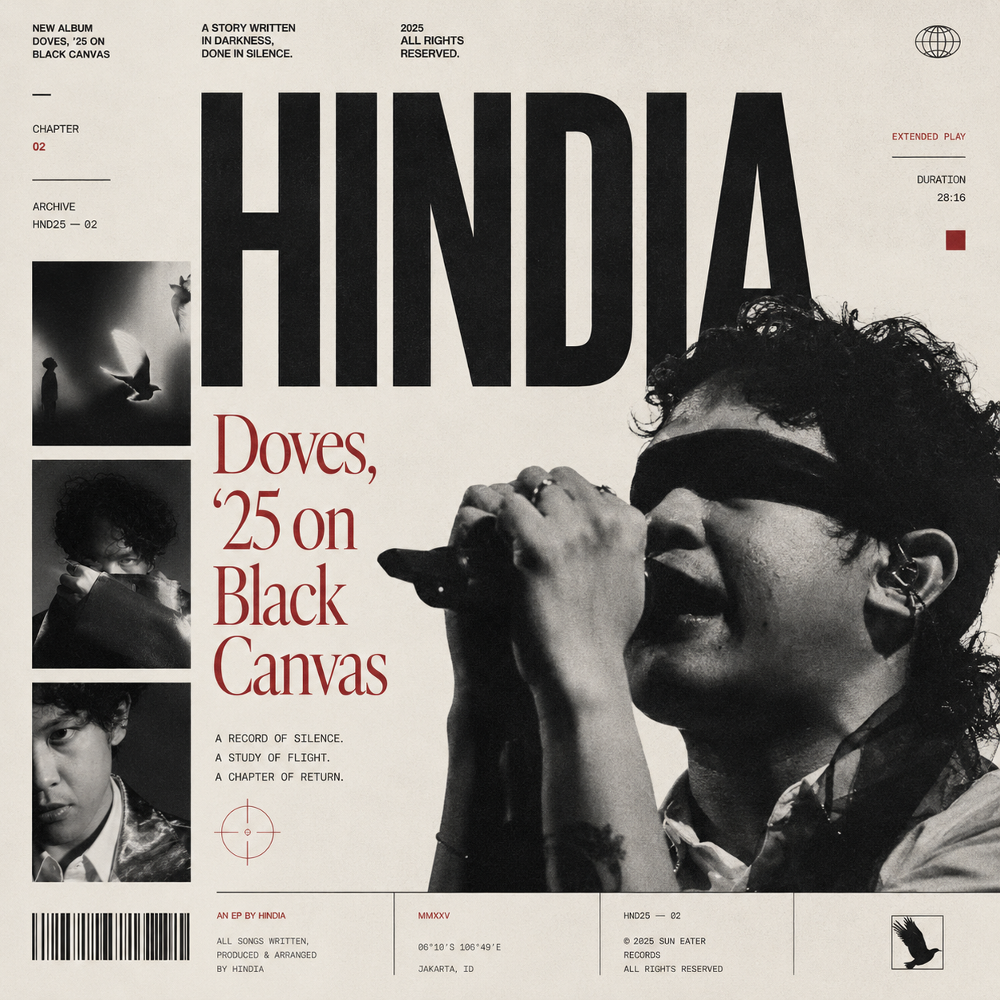
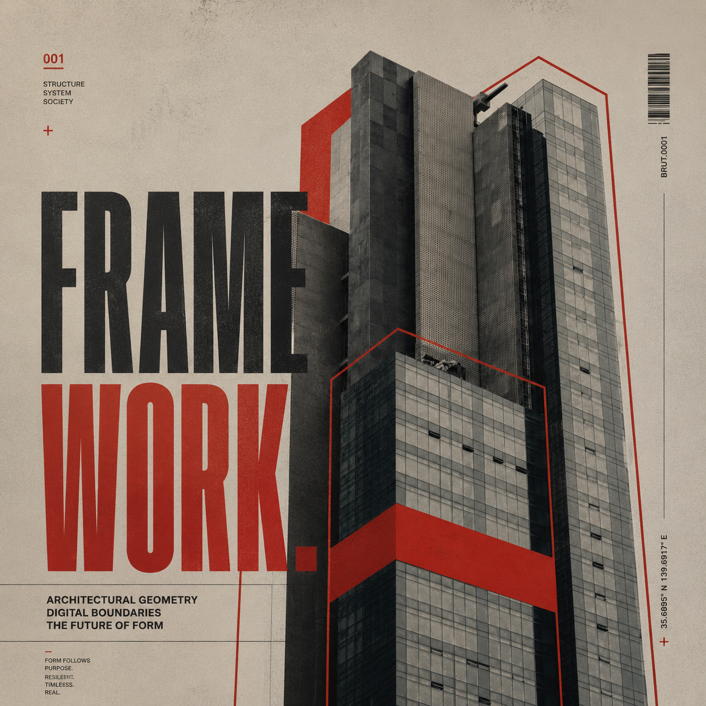
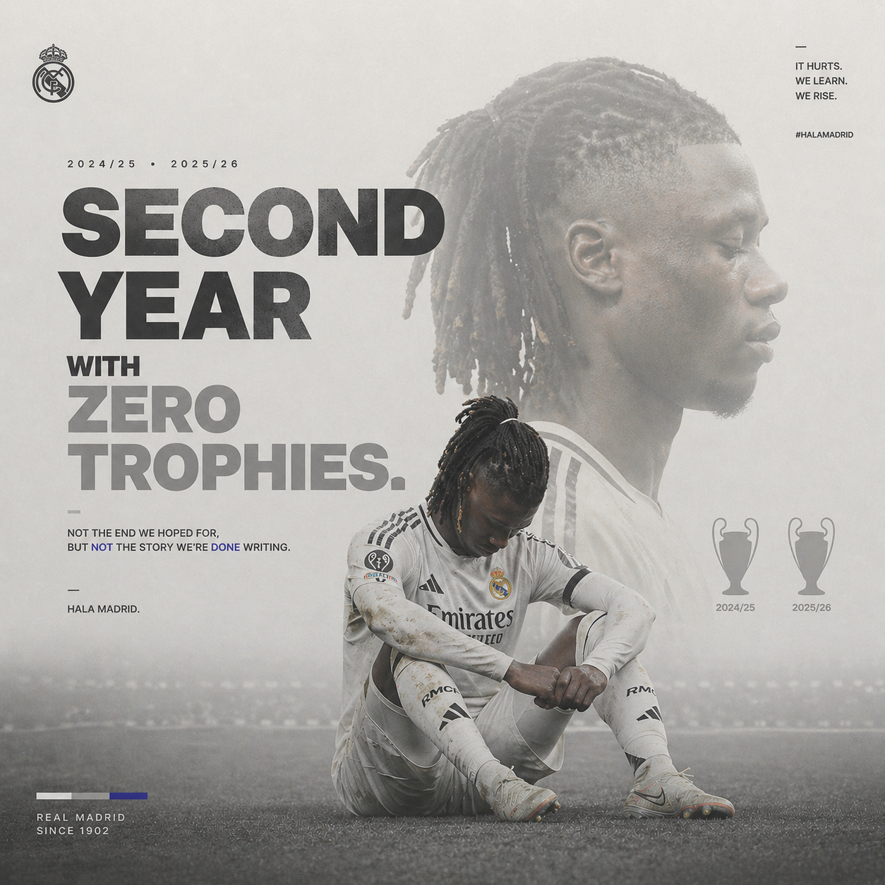

Biography

Gianluigi Andreas Putra Butarbutar
Creative Developer & Visual Explorer
Seorang pengembang kreatif yang antusias dalam menggabungkan estetika desain eksperimental dengan fungsionalitas digital. Saya menikmati proses mengubah ide-ide abstrak menjadi pengalaman internet yang interaktif dan berkesan.
Purwokerto Selatan, Jawa Tengah
Mahasiswa
SMA XAVERIUS 2 PALEMBANG
Jurusan Ilmu Pengetahuan Alam
Telkom University Purwokerto
S1 Teknik Informatika
Palembang, 26 Juni 2006
- Visual Exploration: Editing video & desain konten eksperimental
- Creative Outlet: Bermain gitar (mencari melodi baru)
- Digital Immersion: Analisis & partisipasi dalam Alternate Reality Games (ARG)
Skills
Organization
Pengurus UKM Rohani Kristiani (ROKRIS)
Divisi Multimedia
Telkom University Purwokerto • 2024/2025Koordinator Event Paskah Rohani Kristiani
Divisi PDD
Telkom University Purwokerto • 2025Staff Event Retret Rohani Kristiani
Divisi PDD
Telkom University Purwokerto • 2025Koordinator Event Natal Rohani Kristiani
Divisi PDD
Telkom University Purwokerto • 2025Certificates


Designs

HINDIA
Poster exploration inspired by monochrome magazine layouts and emotional visual storytelling.
2025
FRAMEWORK
Brutalist-inspired composition combining architecture photography with large typography.
2025
SECOND YEAR ZERO TROPHIES
Editorial football poster inspired by modern European sports campaign aesthetics.
2025